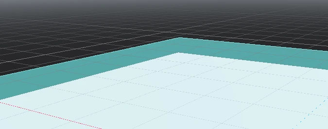

Patrol
Move between points and watch for the player.
Lesson 05 · 70 minutes · Challenge layer
Build a guard that patrols while the player is far away, chases after detection, deals damage on contact, and returns to patrol when the player escapes.
State machine
Move between points and watch for the player.
Update a navigation target and pursue while detected.
Navigate back to the patrol route after the player escapes.
A detection signal changes the current state; the state controls behavior.
States prevent one large function from trying to patrol, chase, attack, and return at the same time.
Scene setup
patrol_points array.player; connect DetectionArea’s body_entered and body_exited.
Screenshots: Godot Engine documentation, © Juan Linietsky, Ariel Manzur and the Godot community, CC BY 3.0.
Chase behavior
extends CharacterBody3D
enum State { PATROL, CHASE, RETURN }
@export var speed := 3.5
@export var patrol_points: Array[Node3D]
@onready var agent: NavigationAgent3D = $NavigationAgent3D
var state := State.PATROL
var player: Node3D
var patrol_index := 0
func _ready() -> void:
if not patrol_points.is_empty():
agent.target_position = patrol_points[0].global_position
func _physics_process(_delta: float) -> void:
match state:
State.PATROL: patrol()
State.CHASE: chase()
State.RETURN: return_to_patrol()
follow_path()
func patrol() -> void:
if agent.is_navigation_finished() and not patrol_points.is_empty():
patrol_index = (patrol_index + 1) % patrol_points.size()
agent.target_position = patrol_points[patrol_index].global_position
func chase() -> void:
if is_instance_valid(player):
agent.target_position = player.global_position
func return_to_patrol() -> void:
if patrol_points.is_empty(): return
agent.target_position = patrol_points[patrol_index].global_position
if agent.is_navigation_finished(): state = State.PATROL
func follow_path() -> void:
if agent.is_navigation_finished():
velocity = Vector3.ZERO
return
var next := agent.get_next_path_position()
var direction := global_position.direction_to(next)
velocity = direction * speed
move_and_slide()
func _on_detection_body_entered(body: Node3D) -> void:
if body.is_in_group("player"):
player = body
state = State.CHASE
func _on_detection_body_exited(body: Node3D) -> void:
if body == player:
player = null
state = State.RETURNFair challenge
Add a red detection glow or sound before the chase begins. Use a short invulnerability timer after damage so one collision cannot remove all health in a single second.
var can_take_damage := true
func take_damage(amount: int) -> void:
if not can_take_damage: return
can_take_damage = false
health -= amount
if health <= 0: respawn()
await get_tree().create_timer(1.0).timeout
can_take_damage = trueAdd an INVESTIGATE state. When the player escapes, the enemy first walks to the last position where it saw the player.
SignalRun_05_AI.Your restore point must demonstrate Patrol → Chase → Return → Patrol and a one-second damage cooldown.Definition of done
0/4 checked
Evidence: Narrate the current state while a partner deliberately triggers every transition.
Your game now creates pressure and meaningful risk.